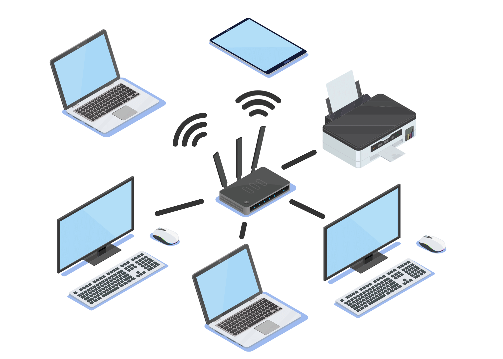

Node: A Node is any physical or virtual device connected to a network capable of creating, receiving, or transmitting information.
Hub/Smart Hub: A Hub is a device that has multiple ports to accept ethernet connections from network devices and is not considered intelligent because it does not filtering any data or have any intelligence as where the data is supposed to be sent.
Router: A Router is a device that routes or forwards data from one network to another based on their ip address
Switch: Switches are similar to a Hub however what makes them differ is that a Switch can learn the addresses of the devices that are connected to it and stores them in a table.
WAP: A Wireless Access Point (WAP) is a device that allows wireless devices to connect to a wired network using Wi-Fi, or related standards.
Servers: A server is a computer or software system that provides data, resources, or services to other computers called "clients" on a computer network. These can be used to make players in a game play together, store databases of information for others to access or more.
